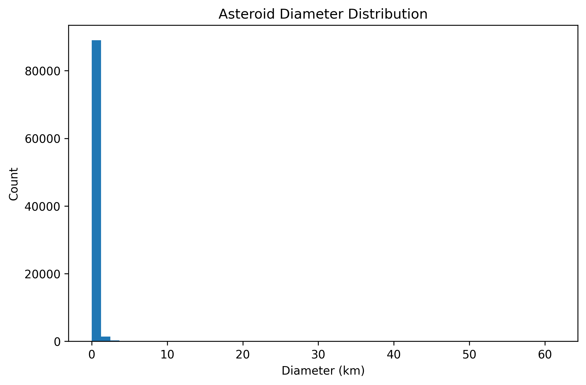
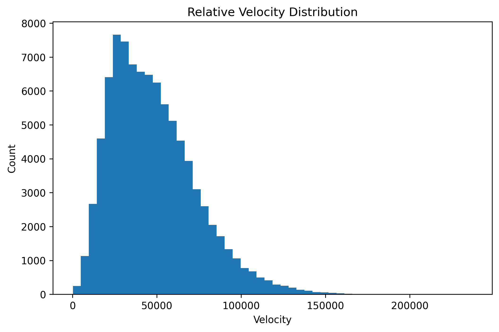
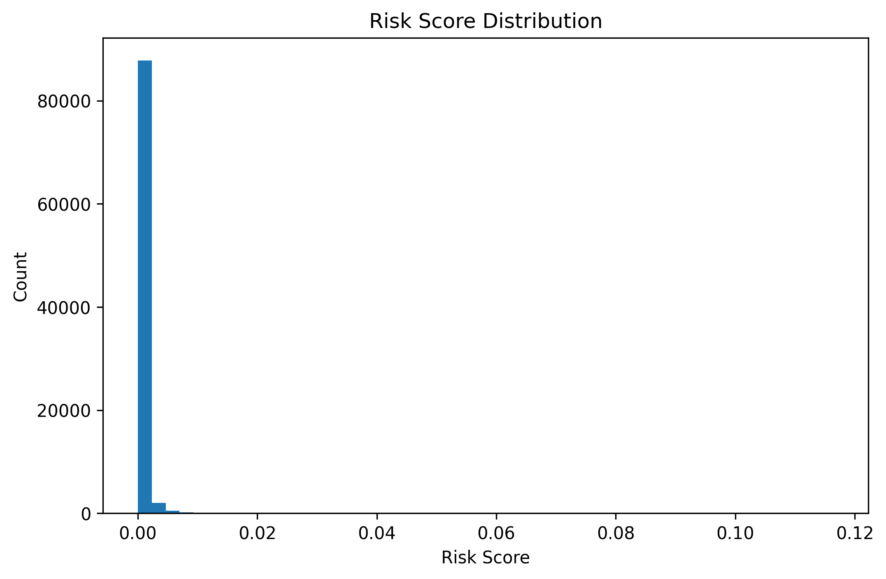
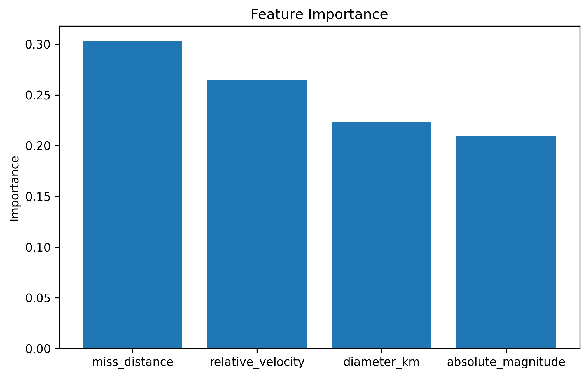
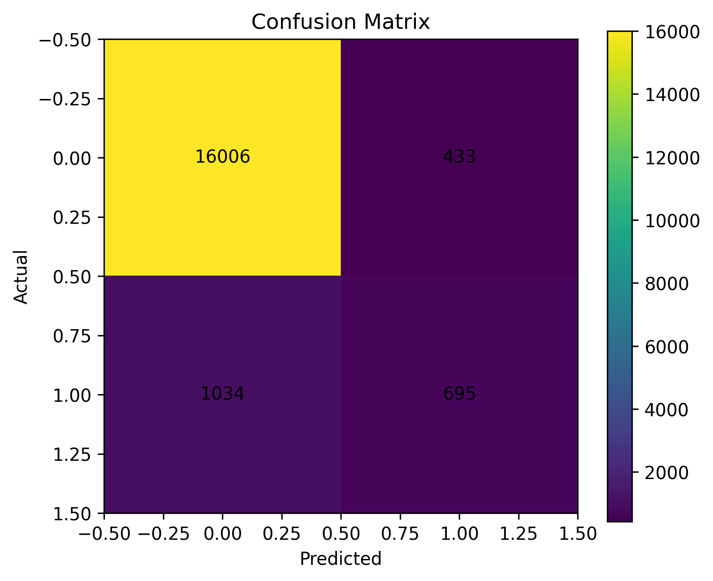

Total Objects Analysed: 90,836
Potentially Hazardous: 8,840
Hazardous Percentage: 9.73%
Machine Learning Accuracy: 91.93%
Model: Random Forest Classifier
✔️ 81,996 Non-Hazardous Objects
⚠️ 8,840 Hazardous Objects
📈 Hazard Rate: 9.73%
🤖 Classification Accuracy: 91.93%




Most Important Predictor: Miss Distance

Random Forest Accuracy: 91.93%
🥇 Miss Distance — 30.28%
🥈 Relative Velocity — 26.50%
🥉 Diameter — 22.32%
📏 Absolute Magnitude — 20.90%
• (2019 OK)
• (2015 TB145)
• 23187 (2000 PN9)
• (2002 NY40)
• 4179 Toutatis
These objects ranked highest using the custom risk metric combining diameter, velocity, and miss distance.
This project analyzed 90,836 Near-Earth Objects (NEOs) using statistical analysis and machine learning techniques. A total of 8,840 objects (9.73%) were classified as potentially hazardous.
A custom asteroid risk score was developed using asteroid diameter, relative velocity, and miss distance to rank potential threats.
A Random Forest machine learning classifier achieved 91.93% accuracy in hazard prediction.
Feature importance analysis revealed that miss distance (30.28%) was the strongest hazard predictor, followed by relative velocity (26.50%), diameter (22.32%), and absolute magnitude (20.90%).
The results demonstrate how machine learning can assist planetary defense efforts by automatically identifying potentially hazardous asteroids from large astronomical datasets.